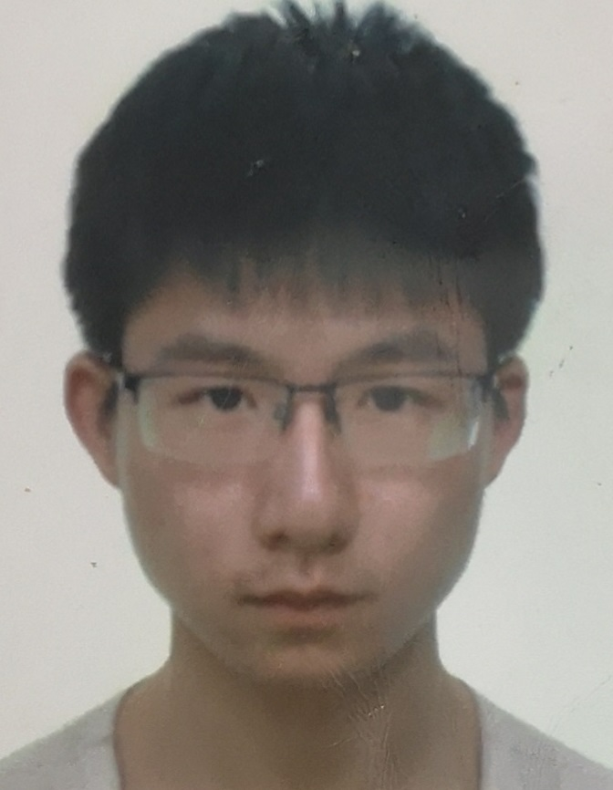
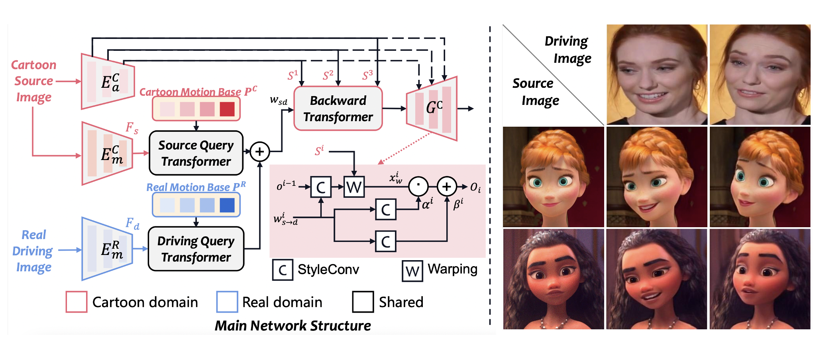
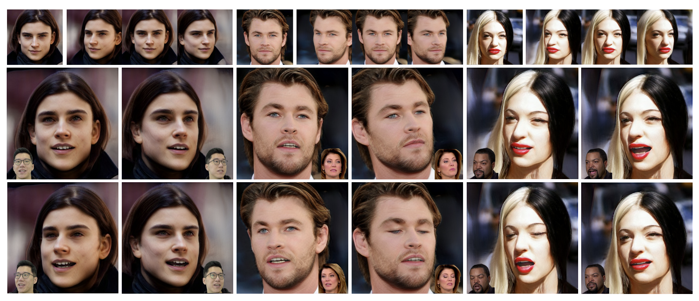
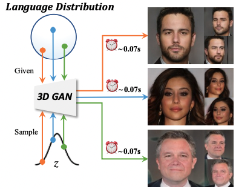
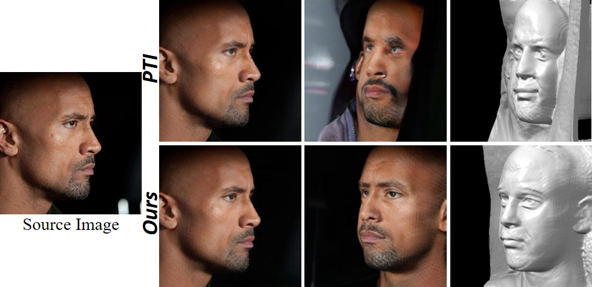
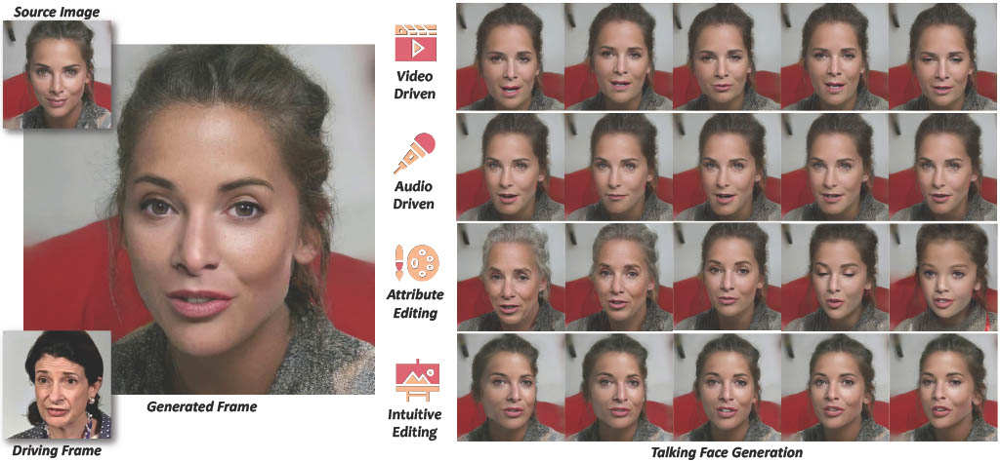
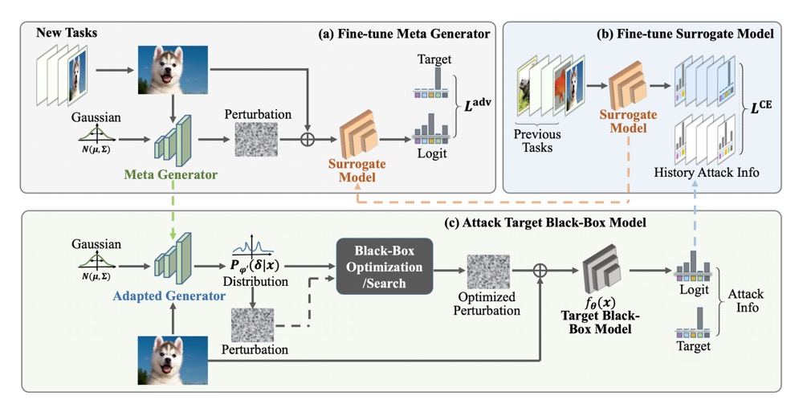
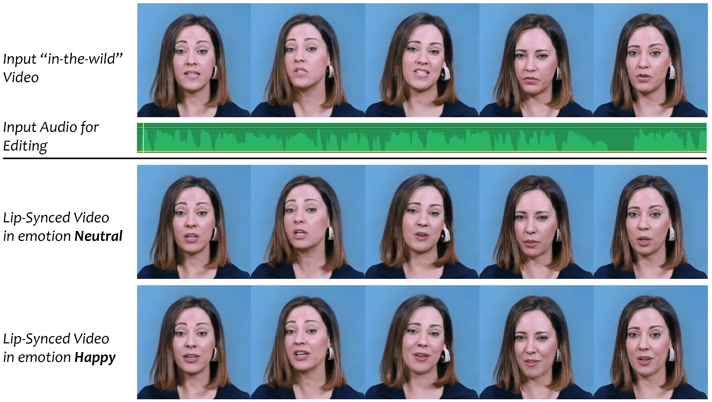
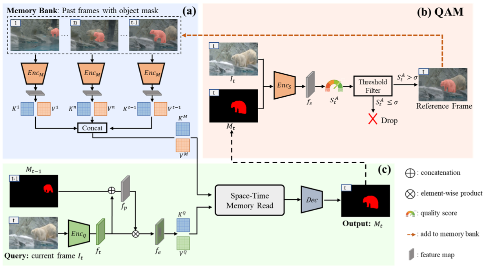

Fei YinGraduate studentEmail: feii.yin[at]foxmail.com 

|
 |
Biography
I am currently a 1st year PhD student in the department of Computer Science, University of Cambridge, advised by Prof. Rafal Mantiuk, also in Rainbow Group. Previously, I obtained Master degree from IIG group in Tsinghua University, supervised by Prof. Yujiu Yang. I also worked with Prof. Baoyuan Wu, Dr. Yong Zhang, and Dr. Jue Wang. I received my bachelor's degree in Department of Software Engineering from Northeastern University in 2020.
My current research interest includes 2D & 3D Generation.
Publications
|  | SinFace4D: Dynamic 3D Facial Avatar Generation from a Single Image. Fei Yin, Mallikarjun B. R., Chun-Han Yao, Rafal Mantiuk†, Varun Jampani†. Arxiv, 2025. |
| ToonTalker: Cross-Domain Face Reenactment. Yuan Gong, Yong Zhang, Xiaodong Cun, Fei Yin, Yanbo Fan, Xuan Wang, Baoyuan Wu, Yujiu Yang. International Conference on Computer Vision (ICCV), 2023. |
|
|  | NOFA: NeRF-based One-shot Facial Avatar Reconstruction Wangbo Yu, Yanbo Fan, Yong Zhang, Xuan Wang, Fei Yin, Yunpeng Bai, Yan-Pei Cao, Ying Shan, Yang Wu, Zhongqian Sun, Baoyuan Wu. SIGGRAPH Asia (Conference Track), 2023. [paper] |
|  | Efficient Text-Guided 3D-Aware Portrait Generation with Score Distillation Sampling on Distribution. Yiji Cheng*, Fei Yin*, Xiaoke Huang, Xintong Yu, Jiaxiang Liu, Shikun Feng, Yujiu Yang, Yansong Tang. T-CSVT, 2024. [paper] |
|  | 3D GAN Inversion with Facial Symmetry Prior. Fei Yin, Yong Zhang, Xuan Wang, Tengfei Wang, Xiaoyu Li, Yuan Gong, Yanbo Fan, Xiaodong Cun, Ying Shan, Cengiz Oztireli, Yujiu Yang. Computer Vision and Pattern Recognition Conference (CVPR), 2023. |
|  | StyleHEAT: One-Shot High-Resolution Editable Talking Face Generation via Pre-trained StyleGAN. Fei Yin, Yong Zhang, Xiaodong Cun, Mingdeng Cao, Yanbo Fan, Xuan Wang, Qingyan Bai, Baoyuan Wu, Jue Wang, Yujiu Yang. European Conference on Computer Vision (ECCV), 2022. |
|  | Generalizable Black-Box Adversarial Attack with Meta Learning. Fei Yin*, Yong Zhang*, Baoyuan Wu*, Yan Feng, Jingyi Zhang, Yanbo Fan, Yujiu Yang. IEEE Transactions on Pattern Analysis and Machine Intelligence (TPAMI), 2022. |
|  | VideoReTalking: Audio-based Lip Synchronization for Talking Head Video Editing In the Wild. Kun Cheng*, Xiaodong Cun*, Yong Zhang, Menghan Xia, Fei Yin, Mingrui Zhu, Xuan Wang, Jue Wang, Nannan Wang. SIGGRAPH Asia (Conference Track), 2022. |
|  | Learning Quality-aware Dynamic Memory for Video Object Segmentation. Yong Liu, Ran Yu, Fei Yin, Xinyuan Zhao, Wei Zhao, Weihao Xia, Yujiu Yang. European Conference on Computer Vision (ECCV), 2022. |

|
Identity-guided Face Generation with Multi-modal Contour Conditions. Qingyan Bai, Weihao Xia, Fei Yin, Yujiu Yang. IEEE International Conference on Image Processing (ICIP), 2022. [paper] |
Work Experience
Tencent AI Lab, Tencent, Shenzhen
Advisor: Dr. Yong Zhang and Dr. Jue Wang
Map Group, Pony.ai, Beijing
Awards
- National Scholarship, Three Times (2017, 2018, 2022)
- ACM-ICPC (Asia Regional) Silver Medal
© Fei Yin | Last updated: Dec. 2022